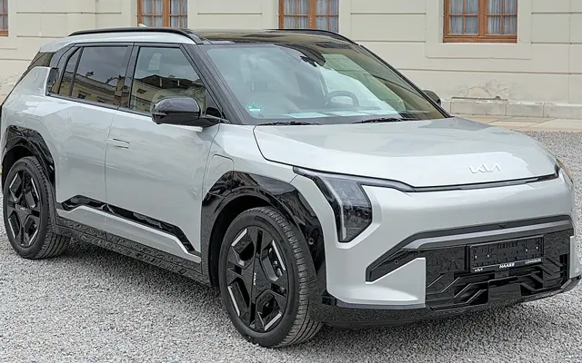

Par Motor › Precios por modelo › Kia EV3
Precio de segunda mano · noviembre de 2026¿Cuánto vale un Kia EV3 de segunda mano?

Precio justo estimado de un Kia EV3 usado en España, año por año, con los kilómetros normales para su edad y en buen estado: de 24.500 € a 38.100 €. Para tasar el tuyo con sus kilómetros reales y su estado, usa el tasador gratis.
Precios del Kia EV3 por año
EV3 (2024–hoy)
Precio de nuevo: 58 kWh 204 CV, 36.000 € · 81 kWh 204 CV, 41.000 € · GT-Line 81 kWh 204 CV, 44.000 €
| Año | Km normales | 58 kWh 204 CV · Eléctrico | 81 kWh 204 CV · Eléctrico | GT-Line 81 kWh 204 CV · Eléctrico |
|---|---|---|---|---|
| 2026 | 5.000 km | 31.200 € | 35.500 € | 38.100 € |
| 2025 | 20.000 km | 26.400 € | 30.100 € | 32.300 € |
| 2024 | 35.000 km | 24.500 € | 27.900 € | 30.000 € |
Kilómetros normales: 15.000 al año en gasolina, híbridos y eléctricos, y 20.000 en diésel, con un máximo de 100.000 km (por encima no tasamos: el precio depende demasiado del historial de cada coche). Cifras redondeadas a 100 €.
Preguntas frecuentes
¿Cuánto vale un Kia EV3 de segunda mano?
Según el año, la versión y los kilómetros, un Kia EV3 usado vale hoy de 24.500 € a 38.100 € en España. El más barato de nuestra tabla es un 58 kWh de 2024 (24.500 €) y el más caro un GT-Line 81 kWh de 2026 (38.100 €). Son precios justos estimados entre particulares y profesionales, con los kilómetros normales para su edad y en buen estado.
¿Qué motorizaciones tiene el Kia EV3?
En nuestra base de datos hay versiones eléctrico, en 1 generación: EV3.
¿Cómo sé si me piden demasiado por un Kia EV3?
Abre el tasador de Par Motor, elige el Kia EV3, el año y los kilómetros reales, y escribe lo que te piden. Te diremos si está por debajo del precio justo (chollo) o por encima (caro). Es gratis y no pide registro ni matrícula.
Otros Kia
Compara su coste real
El precio de compra es solo una parte. Mira cuánto te costaría al mes con combustible, seguro, neumáticos, mantenimiento y lo que pierde de valor.
Abrir el comparador →